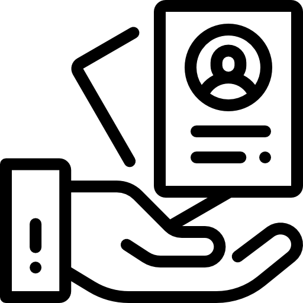

home > 인재채용 > 채용안내
채용안내
미래를 위한 첫 걸음, 삼성디스플레이가 함께하겠습니다.
공통 지원자격
공고에 안내된 졸업시기를 만족하셔야 합니다.
병역필 또는 면제자로 해외여행에 결격사유가 없어야 합니다.
지원하시는 희망 근무직에 따라 필요한 자격 기준이 다릅니다.
시기에 따라 요건이 변경 될 수 있으므로 삼성채용홈페이지(www.samsungcareers.com)에 공지됩니다.
신입/인턴 채용
-
 STEP 1
 STEP 2
STEP 2
 STEP 3
STEP 4
STEP 3
STEP 4
 STEP 5
STEP 5
-
- 01 서류전형
- 삼성채용홈페이지(www.samsungcareers.com)의 채용공고를 통해 지원합니다.
- 02 직무적합성평가
- 성공적인 업무 수행을 위한 역량과 기초직무능력을 갖추었는지 평가합니다.
- 03 직무적성검사
- GSAT/SW 역량 테스트를 통해 해당 지원 직무와의 적성을 평가합니다.
- 04 면접
- 인성/직무역량/창의성 면접을 통해 지원자를 평가합니다.
- 05 채용건강검진
- 사내 병원을 통해 채용에 앞서 건강 이상이 없는지 확인합니다.